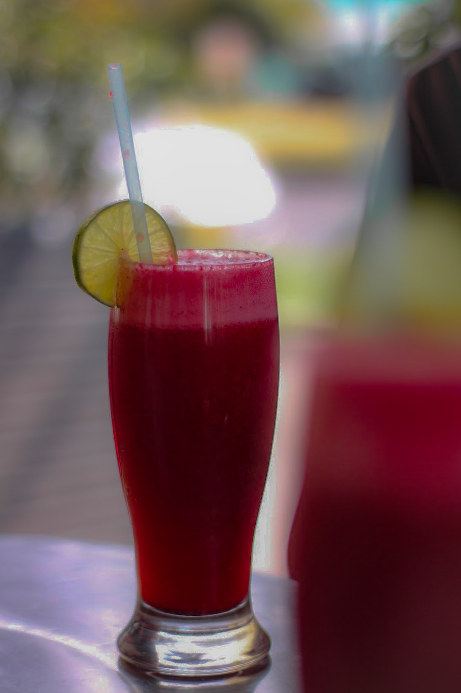

ZOBO

Description
Zobo is a natural juicy drink that is gotten from processed natural particular plant.
It is very nutritious to the human body and helps to boast blood level in the human body system.
INGREDIENTS
- water
- zobo species
- the zobo leaves
- fruit like pinenapple, watermelon, oranges, apples,etc
STEPS
- watch the zobo leaves with clean water
- watch and blend the fruits
- put water in a pot, when steamed, add zobo leaves
- when boiled, cook the fruits
- seive and add the cooked fruits, add the zobo species and stir well
- serve chilled and enjoy